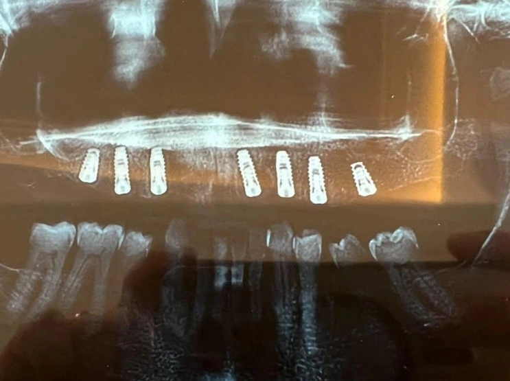

Insight 82 — Immediate Loading of a Replacement Implant in a Maxillary Fixed Prosthesis: A Decision Guide When One Implant Has Failed and the Patient Won't Wait

Clinical Explanation
Question
A patient has had seven implants placed in the maxilla. At the impression stage, one of the implants on the right side failed, and a new implant was placed next to the same area in its place. The patient has already waited four months and is not willing to wait another three. A colleague's proposed plan is to have the abutment for the new implant made along with the others but not loaded, and after three months to remove the prosthesis and seat its abutment. Is there anything wrong with this plan?
Answer
Before anything else, we need to set aside a common assumption: in this case the patient does not need to wait another three months at all. The six osseointegrated implants are entirely sufficient for a full-arch fixed prosthesis in the maxilla, and the seventh implant can be added to the work later. So the question is not whether the patient waits; the question is what to do with the new implant. And here there are two real choices: either this implant goes into the splinted prosthesis under specific conditions, or it stays completely out of the prosthesis until it integrates.
-
First, the right name: immediate loading or early loading?
By the ITI consensus definition, if the prosthesis is connected to the implant within one week of placement it is immediate loading, if it is connected between one week and two months it is early loading, and after two months it counts as conventional loading. In this case, depending on how many days ago the new implant was placed, we are either in the immediate window or in the early window. Both are documented, accepted protocols, provided their main condition is met: sufficient primary stability. -
Path one: the new implant goes into the splinted framework
The condition for this path is that an insertion torque of about 30 to 35 Ncm or more was recorded at placement, or, if an Osstell was available, an ISQ of about 60 or above was read. These are the thresholds commonly used in the immediate and early loading literature.
If this condition is met, our situation is actually favorable. The new implant is not on its own; it is connected to a framework sitting on six integrated implants. This cross-arch connection acts as a splint and does not let the new implant undergo micromotion in the bone. Micromotion is exactly what disrupts osseointegration, and once it is controlled, early loading becomes acceptable. The same logic underlies protocols such as All-on-4.
But there is an important practical point here that is often overlooked: torquing a screw on a freshly placed implant is a risk in its own right. With conventional abutments, the abutment screw torque is usually in the same 30 to 35 Ncm range, that is, close to the torque the implant was placed with. This figure does depend on the system and the type of connection: in some systems, such as Neodent, the abutment screw torque is about 20 Ncm, and in prostheses built on multi-unit abutments the high torque goes to the multi-unit itself, which is usually tightened at the time of surgery, while the prosthetic screw on top of it takes about 10 to 15 Ncm. When we apply such a torque to a fixture that has not yet integrated, instead of only the screw tightening, the fixture itself may rotate in the bone and the initial bone contact with the implant surface may be lost. This risk is greater in the second to fourth weeks after placement, because in this window the initial mechanical stability is declining and biological stability has not yet taken its place (stability dip). The solution is for the new implant to go into the framework, but for its screw to be closed only finger-tight or at low torque at this stage, with full torque applied after the healing period. Because the rest of the framework screws are tightened to standard torque, the framework is fully stabilized, and the low-torque screw of the new implant causes no problem in the meantime; it only needs to be checked at follow-up visits.
For this to be practical, the prosthesis must be screw-retained and the screw access of the new implant must be accessible (palatal or occlusal), so that the final torque can be applied after healing without removing the whole prosthesis. On this path, the occlusal contacts in this area are adjusted lighter, and the prosthesis is designed so that no cantilever falls on the new implant. -
Path two: the new implant stays completely out of the prosthesis
If primary stability was borderline or not recorded at all, this path is safer. In this case we have an additional reason for caution: the new implant was placed next to a site where an implant failed, and the cause of that failure (infection, heat during placement, poor bone quality) is not known. The bone quality of such an area is not always reliable.
The key point of this path is that at this stage the final prosthesis is not made; instead, a screw-retained provisional is made on the six implants. The reason is simple: later we need to be able to bring the seventh implant into play, and that is only possible with a provisional. A cover screw or a short healing abutment is placed on the new implant, the intaglio of the provisional in that area is trimmed and relieved so it has no contact with the implant, and the patient leaves the office with teeth the same day. After the healing period, the seventh implant is either added to the same provisional with a pick-up technique, or brought directly into the final impression, and the final prosthesis is made on seven implants.
If, instead of a provisional, the final framework is made on six implants now and we later want to connect the seventh implant to it, you can be almost certain we will have a misfit and the framework will no longer seat passively. So on this path, making a provisional is mandatory. -
Summary
The patient gets a prosthesis now and does not wait. If the new implant's primary stability is documented and sufficient, it goes into the splinted framework, but its screw is closed without full torque for now so the fixture does not rotate, and the final torque is applied after healing. If stability is not sufficient or we are not sure, the implant stays completely out, a provisional is delivered on the six implants, and the seventh implant is added after healing. -
Source
Source for the loading definitions: ITI consensus (Weber HP et al., Int J Oral Maxillofac Implants 2009;24 Suppl:180-183; reaffirmed in the 2013 and 2018 consensus conferences). Official page: ITI consensus statement on loading protocol definitions, on the ITI Academy website
The content of this page is intended for the educational use of dentists and dental students.